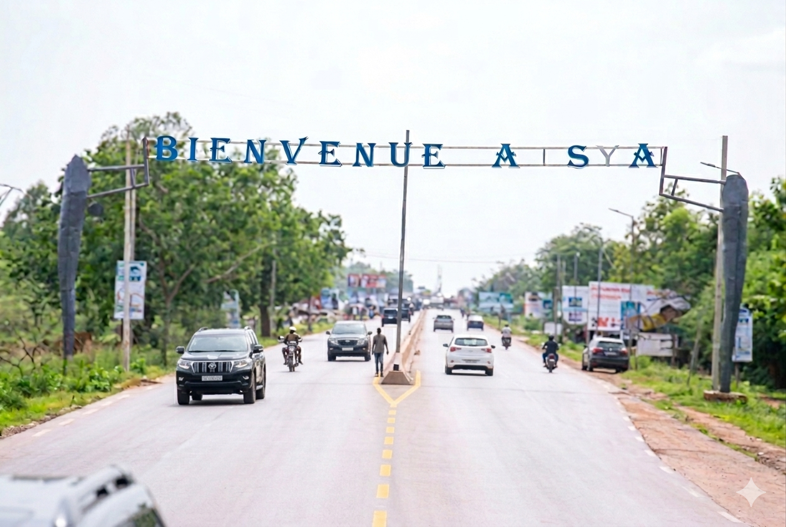
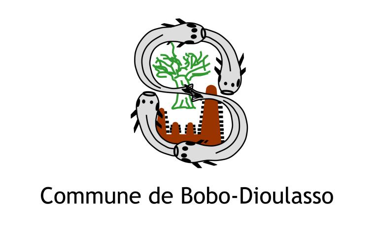
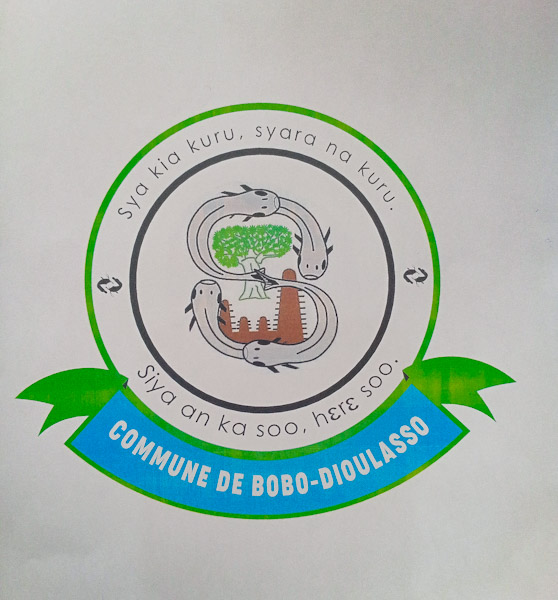

Fondée en 1897, Bobo-Dioulasso est la deuxième ville du Burkina Faso et le cœur battant de la région des Hauts-Bassins. Lovée entre les cours d'eau d'Houet et du Kou, elle mêle architecture coloniale, mosquées en banco et marchés colorés dans une atmosphère unique en Afrique de l'Ouest. Son nom, issu du dioula, signifie littéralement « chez les Bobo et les Dioula », deux peuples fondateurs qui ont forgé son identité plurielle. Avec ses 1,5 million d'habitants, la ville est un melting-pot de cultures, de langues et de religions qui cohabitent dans une paix remarquable. Son climat tropical, ses espaces verts et ses cours d'eau lui valent le surnom de « ville la plus agréable du Burkina ».

Surnommée « Bobo » par ses habitants, la ville est reconnue pour sa tolérance inter-religieuse, sa scène artistique foisonnante et son artisanat de renom. Chaque ruelle du vieux quartier de Dioulassoba invite à une plongée dans un patrimoine vivant, transmis de génération en génération. Ses marchés animés regorgent d'épices, de tissus bogolan et d'objets artisanaux fabriqués à la main. La ville accueille chaque année le SIAO, le plus grand salon de l'artisanat africain, attirant des exposants et visiteurs du monde entier. Bobo est aussi une ville universitaire dynamique, berceau d'une jeunesse créative qui dessine l'avenir du Burkina Faso.